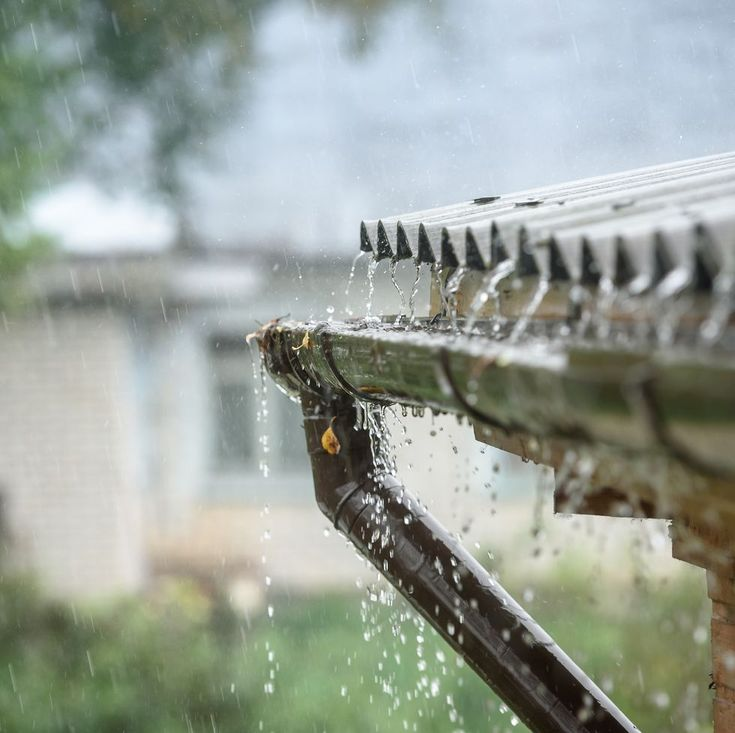
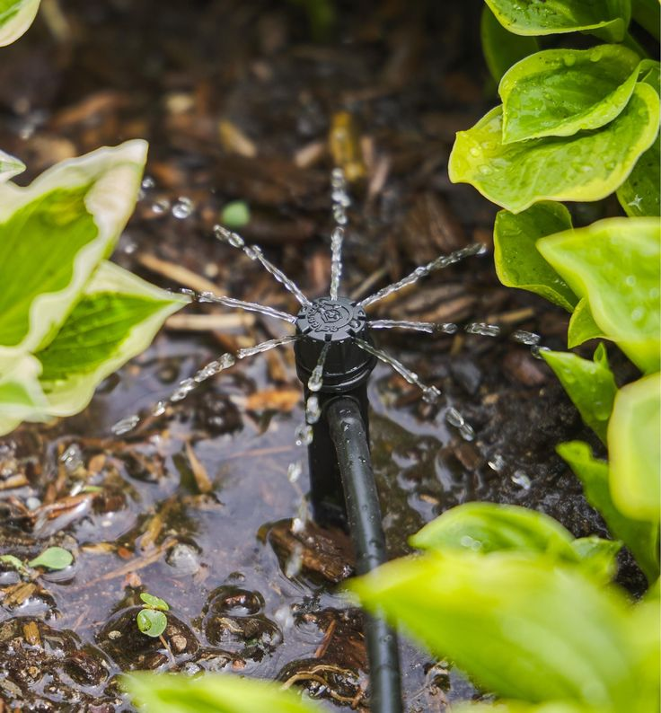
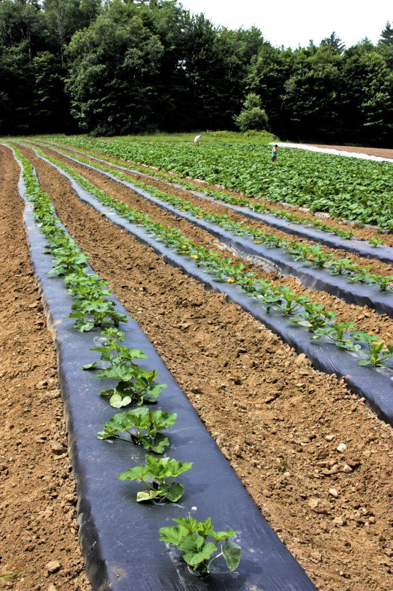
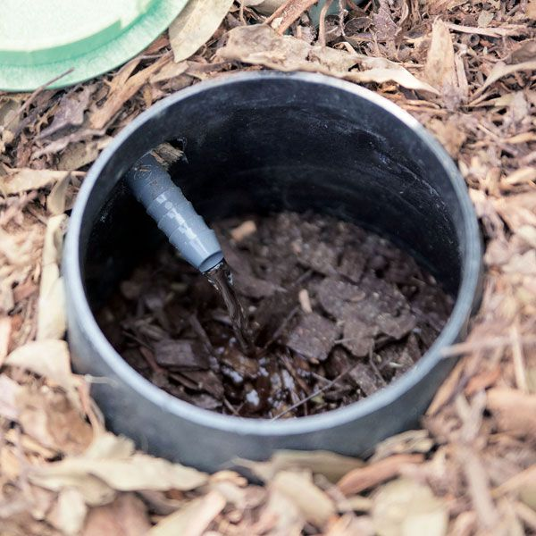
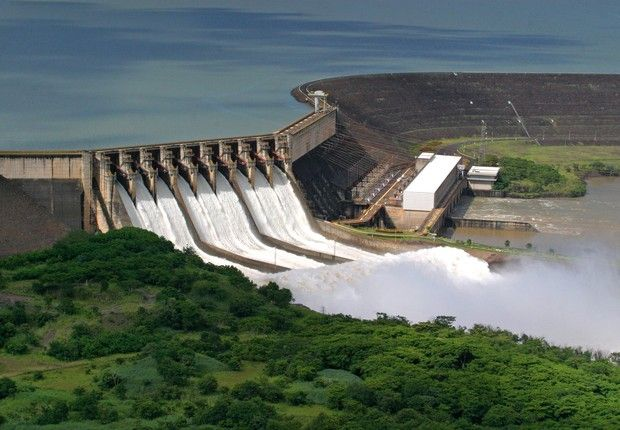

1. Rainwater Harvesting
Collecting and storing rainwater from rooftops, land surfaces, or rock catchments helps reduce dependence on groundwater.
- Install collection systems on rooftops
- Use filters and underground tanks
- Helps recharge groundwater naturally
2. Drip Irrigation
Delivers water directly to the plant roots through a system of pipes, valves, and emitters.
- Highly efficient for water usage
- Reduces water loss due to evaporation
- Ideal for row crops and vegetables
3. Mulching
Mulching covers the soil surface with organic or inorganic materials to retain soil moisture and prevent evaporation.
- Use dry leaves, straw, wood chips, or plastic
- Prevents weed growth
- Improves soil structure and fertility
4. Contour Plowing

Plowing across the slope of the land to create ridges helps slow down water runoff and reduces erosion.
- Useful in hilly and sloped areas
- Traps water between contours
- Improves water infiltration
5. Greywater Recycling
Reusing water from showers, sinks, and washing machines for irrigation and other non-potable purposes.
- Reduces wastewater discharge
- Filters and treats water before reuse
- Ideal for home gardens and landscapes
6. Check Dams
Small barriers built across water channels to slow water flow and encourage percolation into the ground.
- Promotes groundwater recharge
- Reduces soil erosion
- Inexpensive and easy to maintain
7. Percolation Pits

Simple excavated pits that collect runoff water and allow it to slowly seep into the soil, recharging groundwater.
- Constructed in open spaces or near borewells
- Effective in urban areas too
- Easy and cost-effective